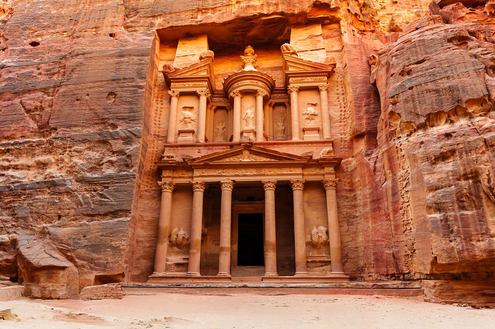

تُعد مدينة البتراء من أشهر المعالم السياحية في الأردن، وتقع في محافظة معان. تشتهر بلون صخورها الوردي ومبانيها المنحوتة في الجبال، ومن أشهر معالمها الخزنة والسيق. وتُعتبر البتراء من عجائب الدنيا السبع الجديدة، وهي وجهة سياحية يقصدها الزوار من جميع أنحاء العالم.